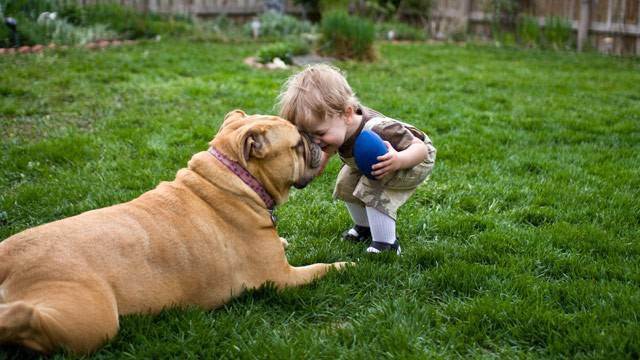

Dogs are man's best friend in the animal kingdom, but have you ever wondered how old you are relative to your dog's age, or how old your dog is relative to your age?
Well, this dog-human age converter will help you know how you and your dog measure up!
Alright, let's get g[r]oing:
NB: The calculation is not rocket science: since dogs generally reach adulthood within the first two years, the formula is fairly simple:
- The first 2 years of a dog's life count as 10.5 dog years each.
- Each year following equates to 4 dog years